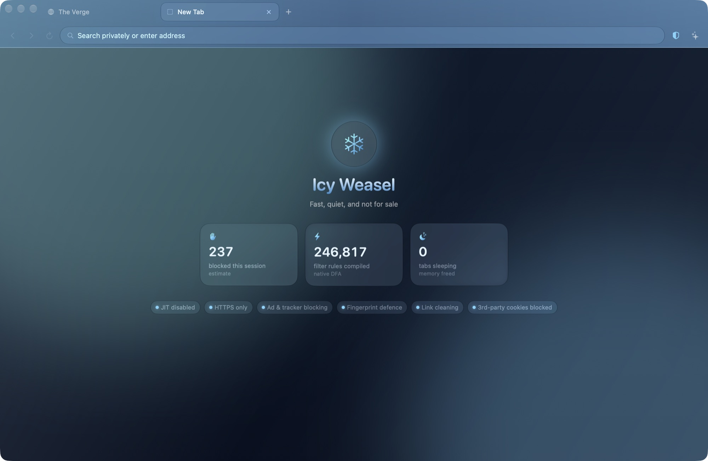

The Mac browser that blocks ads before they load.
Icy Weasel compiles nearly 250,000 filter rules straight into Apple's WebKit engine, hides you from fingerprinting, and refuses insecure connections by default. No account, no telemetry, nothing to sell.

What it stops
Everything here is on from the first launch. If a site breaks, turn any of it off for that site alone from the shield in the toolbar.
- Ads and trackers
- EasyList, EasyPrivacy, uBlock Origin's lists and more, turned into WebKit's native content rules. Blocked requests never leave your Mac.
- YouTube video ads
- The ad schedule is removed from the player before it plays, so ads are neither shown nor downloaded.
- Pop-ups
- Windows a page opens without your click are refused. The toolbar shows what was stopped if you want one back.
- Fingerprinting
- Canvas and audio readouts get a tiny per-site change, so trackers can't link your visits across sites.
- Tracking links
- Parameters like utm_source and fbclid are removed from links before the page loads.
- Insecure connections
- Every site is loaded over HTTPS. If a site can't do that, you get a clear warning page instead of a silent downgrade.
The one trade-off, stated plainly
Attackers most often break into browsers through the JavaScript speed compiler, the JIT. Icy Weasel switches it off by default. Reading sites feel the same; script-heavy apps run slower.
| JavaScript mode | Protection | Same script, measured |
|---|---|---|
| Full speed | Standard | 45 ms |
| Hardened (default) | No JIT | 147 ms |
| Lockdown | Apple's strictest | 235 ms |
Give a heavy site you trust, like a spreadsheet or a map, full speed from its shield. Everything else stays hardened.
Everything else a browser needs
Tabs that stay out of the way
- Named, coloured tab groups
- Idle tabs sleep to free memory
- Your session comes back after a restart
- Private windows that forget everything
An assistant that stays on your Mac
Ask questions about the page you're reading. It finds the AI models already running on your Mac, like Ollama or Bonsai, so the page never leaves your computer. A cloud model with your own API key is optional.
Your choice of search
DuckDuckGo, Startpage, Brave, Kagi, Ecosia and six more, or your own. Address-bar suggestions come only from your own history and bookmarks.
What it doesn't do yet
Icy Weasel runs on WebKit, the engine behind Safari, so Chrome extensions can't be installed. There's no built-in password manager or sync yet.
Why a weasel? Each winter the stoat grows a white coat and becomes the ermine, nearly invisible against the snow. That's the whole idea.
Get Icy Weasel
Free and signed by its developer. Open the disk image and drag Icy Weasel into Applications.
Requires macOS 14 Sonoma or later. Hardened JavaScript needs macOS 26.4 or later.